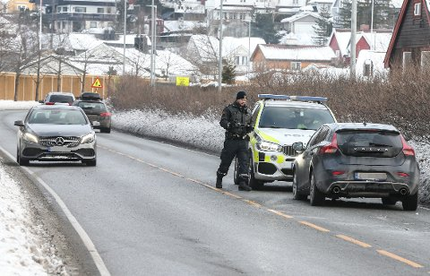

Det har vært snakk om at norge skal invistere i nye militærhelikoptre til neste år. dette skal komme på en totalkostnad på flere milliarder kroner. "Skal norge bli det nye USA spør Knut Arild Hareide"

Bilist kjørte av veien, politiet reagerer. "Dette er det værste vi har sett!" sier politikonstabel Rolf Arnesen fra Oslo politidistrikt
Bilist kjørte av veien, politiet reagerer. "Dette er det værste vi har sett!" sier politikonstabel Rolf Arnesen fra Oslo politidistrikt

I går startet en oljeplattform i Nordsjøen å brenne. Brannvesende undersøker nå årsaken til brannen.
Skjekk ut Fredrik sin trehytte! Dette er mye morsommere enn nettbrett og internett sier åtteåringen.

Norge står ovenfor den største melkekrisen noensinne. Sykdommer hos norske kuer fører til lav melkeproduksjon. Jordbruks og fiskeriministeren frykter at prisene vil doble seg.
7